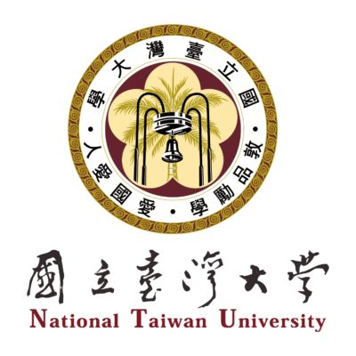
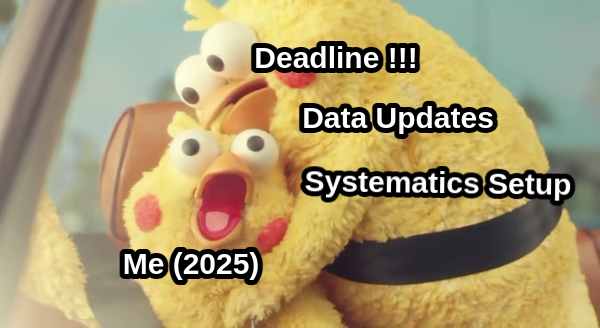
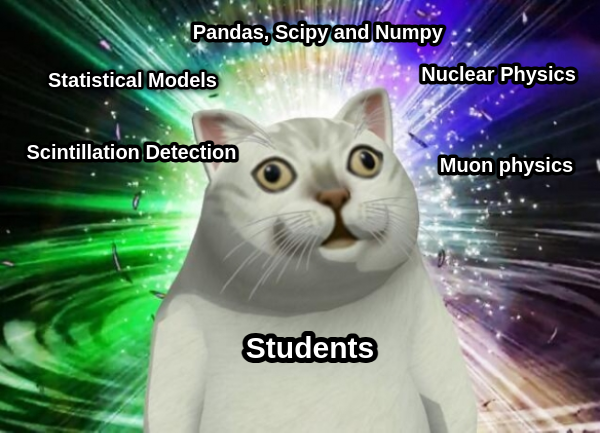
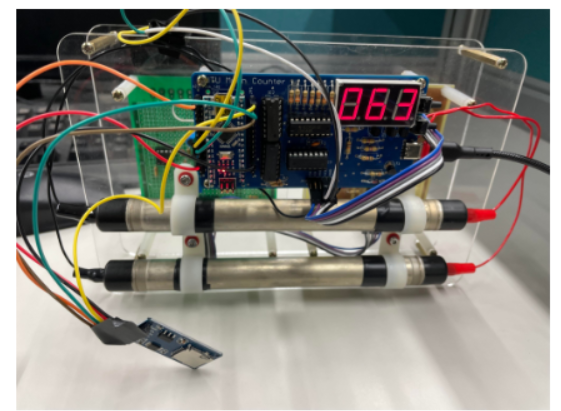
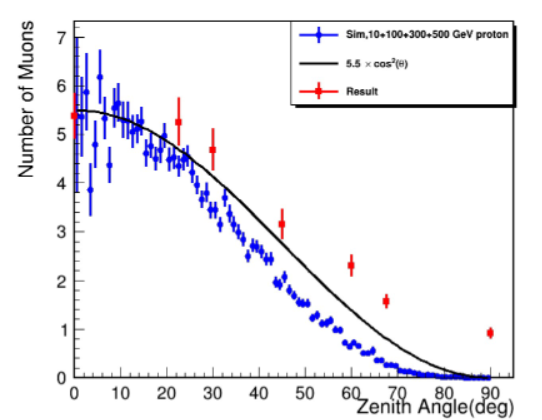

Research Profile
PhD researcher in Particle Physics at the University of Oxford and member of the SNO+ collaboration, contributing to reactor antineutrino measurements, detector calibration, and background modeling. My research centers on statistical inference, Bayesian optimization, and large-scale data analysis, developing scalable computational pipelines for parameter estimation and uncertainty quantification in high-dimensional experimental environments.
Education
PhD in Particle Physics — University of Oxford

Oct 2023 – Present
SNO+ Experiment researcher focusing on neutrino physics, scintillation technology, and statistical inference. St. Catherine College Scholarship recipient.
BSc in Physics — National Taiwan University
2018 – 2022 | GPA 3.95/4.30
1st rank (Spring 2022). Best Final Report in Quantum Mechanics.
Selected Research Projects
High-Dimensional Bayesian Optimization (PCA–TuRBO) (Ongoing)
Developed a PCA–TuRBO framework for continuous high-dimensional spectral reconstruction and optimization. Implemented GPU-accelerated multi-output TuRBO models in BoTorch and engineered automated pipelines for simulation execution and hyperparameter tuning.
High-Dimensional Timing Calibration
Designed automated Bayesian optimization pipeline using HTCondor, Python, BoTorch and PyTorch for calibrating scintillator-based sensor systems. Reduced calibration time from one week to one day (~7× speedup).
Scintillation Timing TuningReactor Antineutrino Analysis
Built likelihood-based models for sparse, low-signal datasets. Processed 10+ TB structured detector data with scalable Python/C++ pipelines. Modeled statistical and systematic uncertainties for unbiased parameter inference.
Atmospheric Neutrino Rare-Event Analysis
Developed simulation-based evaluation strategies under rare-event and class-imbalanced conditions. Provided first estimation of atmospheric event rates within SNO+.
Nuclear Background Analysis — Automated Monitoring & Anomaly Tracking
Built scalable Python/C++ workflows for time-series modeling of nuclear background chains, integrated SQL-based data management for efficient querying and processing of detector data, and implemented automated statistical monitoring and anomaly detection tools to support continuous data-quality validation. These systems enabled real-time tracking of background signatures and rapid identification of detector anomalies.
BiPoTaggingPublications
• Measurement of reactor antineutrino oscillations with 1.46 ktonne-years of data at SNO+ , arXiv (2025)
• Initial Measurement of reactor antineutrino oscillation in SNO+ , European Physical Journal C (2025)
Core Skills
Work Experience
Visiting Scientist — SNOLAB (2025)
Conducted optical and sensor measurements underground; detector monitoring shifts.
Nuclear Physics Lab Demonstrator — Oxford (2024–2025)
Guided experiments, software debugging, and assessed lab work.
British Olympiad Marker (2024)
Teaching Assistant — NTU (2021)
Delivered tutorials in modern particle physics; graded coursework and exams.
Side Projects
Custom Geiger Tube Array for Cosmic Muon Measurement
Designed and soldered custom PCB layouts, integrating Geiger tubes for muon detection to experimentally investigate the West–East Effect and Zenith Angle Dependence.
 Atmospheric Muon Simulation
Developed a custom atmospheric muon generator to simulate secondary particle production from cosmic-ray air showers resulting from primary particle interactions with atmospheric nuclei.
3D Particle–Mesh N-Body Gravitational Simulation
Developed a parallelized C++ N-body simulation that solves the Poisson equation using FFT-based spectral methods and evolves particle dynamics with a symplectic leapfrog integrator (KDK). Implemented CIC/TSC mass assignment schemes with OpenMP multi-threading for scalable performance.
GitHub: N-Body Gravitational Simulation